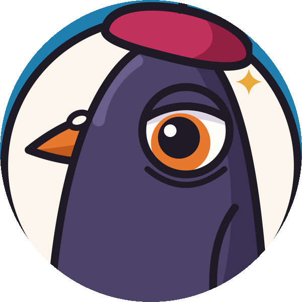

iepazīstināt ar sevi: Jeg heter …, Jeg kommer fra …;
personu vietniekvārdus: jeg, du, han, hun …;
izrunāt burtus æ, ø, å;
skaitīt no 0 līdz 10.

Hei! Jeg heter Polly.
Es esmu balode no Rīgas, un šodien lidoju uz Norvēģiju. Esmu dzirdējusi, ka tur ir fjordi, ziemeļblāzma un brūnais siers. Lido man līdzi — mācīsimies norvēģu valodu kopā!
1A
Ordforråd
Vārdu krājums: sasveicināšanās
Hei! / Hallo!Sveiki! Čau!
Ha det (bra)!Uz redzēšanos! [ha de]
God morgen!Labrīt! [gu morn]
Vi ses!Tiksimies!
God dag!Labdien! [gu dāg]
Takk! / Tusen takk!Paldies! / Liels paldies!
God kveld!Labvakar!
Vær så god!Lūdzu! (pasniedzot)
God natt!Ar labu nakti!
Unnskyld!Atvainojiet! [unšil]
Hvordan går det?Kā iet? [vurdan gor de]
Bra, takk! Og med deg?Labi, paldies! Un tev?
1Kā sveicināties? Pievieno katram pulkstenim pareizo sveicienu.
🌅
07:30
☀️
13:00
🌆
19:00
🌙
23:45
Atbildes: 07:30 God morgen! · 13:00 God dag! · 19:00 God kveld! · 23:45 God natt!
1
Norsk med Polly · A1
1B
Les! På Gardermoen
Lasām: lidostā
PollyHei! Jeg heter Polly. Hva heter du?
MiaHei, Polly! Jeg heter Mia. Jeg er en måke. Hvor kommer du fra?
PollyJeg kommer fra Riga, i Latvia.
MiaVelkommen til Norge!
PollyTusen takk! Er dette Oslo?
MiaNei, dette er Gardermoen. Oslo er ikke langt herfra.
PollyHvordan går det, Mia?
MiaBra, takk! Og med deg?
PollyVeldig bra! Men jeg er litt sulten.
MiaVil du ha en vaffel? … Vær så god!
PollyMmm! Takk, Mia. Ha det!
MiaHa det bra! Vi ses!
en måke — kaijahvor — kurvelkommen til — laipni lūgtidette — šis, šīikke langt herfra — netālu no šejienesveldig — ļotimen — betlitt sulten — mazliet izsalcis/-usivil du ha …? — vai gribi …?
2Riktig eller galt? Patiesi (R) vai nepatiesi (G)?
1. Mia ir balode.
R / G
2. Pollija ir no Latvijas.
R / G
3. Gardermoen ir Oslo centrā.
R / G
4. Mia jūtas labi.
R / G
5. Pollija ir izsalkusi un saņem vafeli.
R / G
Atbildes: 1 G (Mia ir kaija — en måke) · 2 R · 3 G (Oslo ir ikke langt herfra) · 4 R (Bra, takk!) · 5 R
🧇
Vai zināji?
Norvēģu vafeles ir mīkstas un cep tās sirsniņu formā. Norvēģi tās ēd ar ievārījumu, skābo krējumu vai… ar brūno sieru brunost. Vafeles ir gandrīz katrā kafejnīcā, prāmī un pat slēpošanas trasē.
2
1. nodaļa · Hei! Jeg heter Polly
1C
Grammatikk
Gramatika: es, tu, viņa …
Lai pastāstītu par sevi, vajag personu vietniekvārdus un trīs ļoti noderīgus darbības vārdus: å hete (saukties), å være (būt) un å komme (nākt).
Norsk
Latviski
være
jeg [jai]
es
er
du
tu
er
han
viņš
er
hun
viņa
er
den / det
tas, tā (lietas)
er
vi
mēs
er
dere
jūs (vairāki)
er
de [di]
viņi, viņas
er
🇱🇻 Latviski ↔ 🇳🇴 norvēģiski
Latviešu valodā darbības vārds mainās: es esmu, tu esi, viņš ir, mēs esam…
Norvēģu valodā forma visām personām ir viena! Tagadnē gandrīz visi darbības vārdi beidzas ar -r:
jeg heter · du heter · vi heter
jeg kommer · hun kommer
Uzmanību!
Norvēģi gandrīz vienmēr saka du — arī svešiniekam, skolotājam, ārstam un pat karalim intervijā. Pieklājīgais De mūsdienās ir ļoti rets.
Jautājumi: jautājuma vārds + darbības vārds + persona
Hva heter du?
Kā tevi sauc? (burtiski: Kas saucies tu?)
— Jeg heter Polly.
Hvor kommer du fra?
No kurienes tu esi?
— Jeg kommer fra Latvia.
Hvem er det?
Kas tas ir? (par cilvēku)
— Det er Mia.
Burti hv vārda sākumā izrunā kā v: hva [va], hvor [vur], hvem [vem].
3Ieraksti er, heter vai kommer.
Jeg Polly.
Mia en måke.
Hun fra Norge.
Vi på Gardermoen.
Hva du?
Hvor dere fra?
Atbildes: 1 heter · 2 er · 3 kommer · 4 er · 5 heter · 6 kommer
4Kurš vietniekvārds? Aizstāj iekavās rakstīto.
(Polly) kommer fra Riga.
(Polly og Mia) er på Gardermoen.
(Du og Mia) er venner.
(Polly og jeg) lærer norsk.
(en vaffel) er god!
Atbildes: 1 Hun · 2 De · 3 Dere · 4 Vi · 5 Den
3
Norsk med Polly · A1
1D
Uttale og tall
Izruna un skaitļi
Æ æ
plats «e»lære — mācīties
Ø ø
«e» ar apaļām lūpāmbrød — maize
Å å
garš «o»gå — iet
O o
bieži kā «u»!god [gu] — labs
0null
1en
2to [tu]
3tre
4fire
5fem
6seks
7sju [šū]
8åtte
9ni
10ti
5Pollija skaita vafeles. Atrisini un uzraksti atbildi vārdos.
to + tre =
fire + fire =
ti − ni =
seks + en =
fem + fem − to =
Atbildes: 1 fem · 2 åtte · 3 en · 4 sju · 5 åtte
✏️ Pollijas piezīmes · Interesanti fakti
Norvēģijā ir divas rakstu valodas: bokmål («grāmatu valoda») un nynorsk («jaunnorvēģu»). Bokmål raksta apmēram 85–90 % norvēģu — to mācāmies arī mēs.
Lofotu salās ir ciems ar vārdu Å — viens no īsākajiem vietu nosaukumiem pasaulē.
No Rīgas līdz Oslo ir apmēram 850 km taisnā līnijā. Pasta balodis tos varētu nolidot vienas dienas laikā!
6Skriv! Uzraksti par sevi 3 teikumus — kā Pollija.
Hei! Jeg heter .
Jeg kommer fra .
Hvordan går det?
✓
Sjekk deg selv
Pārbaudi sevi
Es protu sasveicināties dažādos dienas laikos.
Es protu pateikt, kā mani sauc un no kurienes esmu.